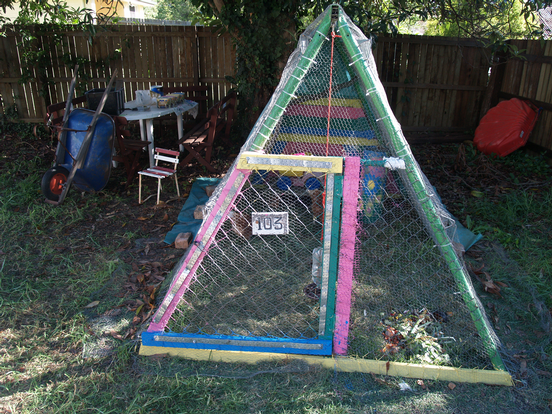
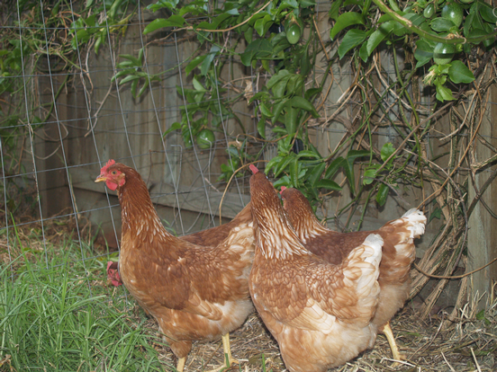
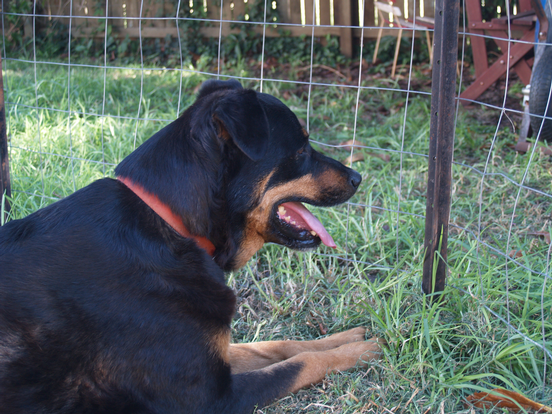
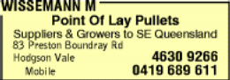
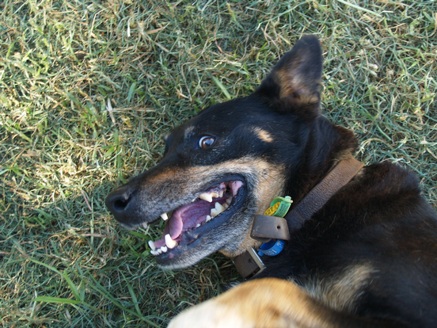
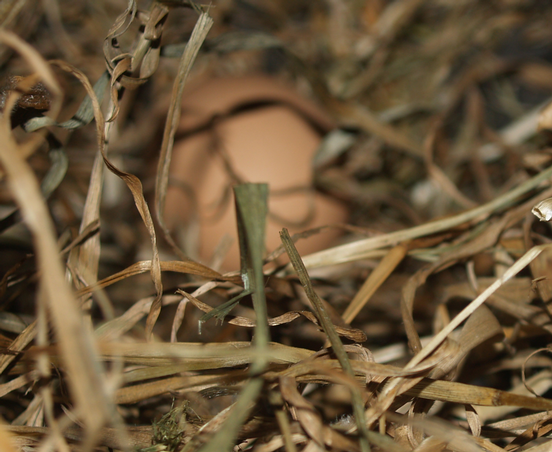

Which came first? The chooks (obviously)
2007-02-08
There is apparently some contention about which comes first, but at our place it was the chooks. We built them a house out of an old swing-set we got for nothing, some bird netting, the old front fence we have replaced with the new front fence, some pine pallets, quite a few cable ties, some wire, lots of self-drilling roofing screws (my favourite!) and so on. Helping were my parents Ann& Ian Sefton.
Here's the chook house:

The long suffering Sandra and our offspring painted it.
Then we got chooks. They are:
-
Mrs Dot,
-
The chook formerly known as Stinger, who currently has no name,
-
Krishna(for whom we leave offerings at every meal, via a small white bucket) and
-
Charmaine Harriet Ophelia Odetta Krystal.

Actually, the chook with no name wants to be called Billie, but we already have a Billie, she's pictured below, admiring the fence I erected between her and the poultry.

And no Krishna is not a rooster she just has a boy-god's name.
Andrew Treloar, whose name I am practicing spelling is an expert on chooks. He has lots.
Our chooks come from a supplier in Top Camp. I know the ad says Hodgson Vale, but it's definitely Top Camp. Mr Wissemann says that they're not related to Rhode Island reds. But they look like Andrew's ISA Browns to me. They're some kind of commercially viable cross-breed that lays a lot of eggs. Bron Dye from the RUBRIC project has a couple too and she tells me they've been at it for years.

So, Andrew what kind of chook do we have here?
And for extra points what kind of animal is this? Goes by the name of Spensa.

(Answer: Spensa is ½ Kelpie, ½ German Shepard, ½ Bull Terrier & ½ Fruit Bat)
And finally, the first egg, which came along today a few weeks after the chooks.
